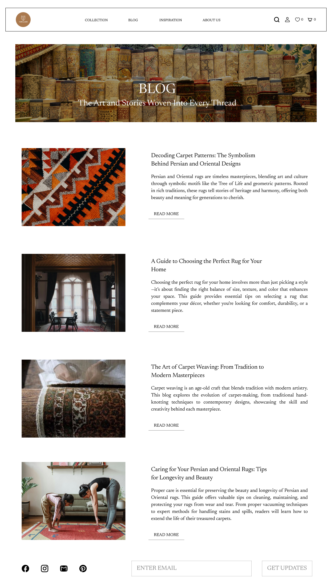
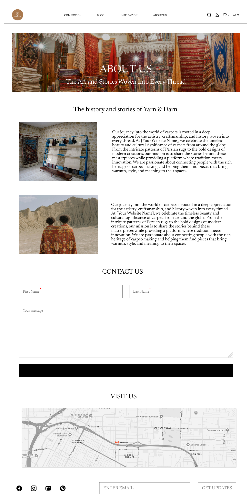
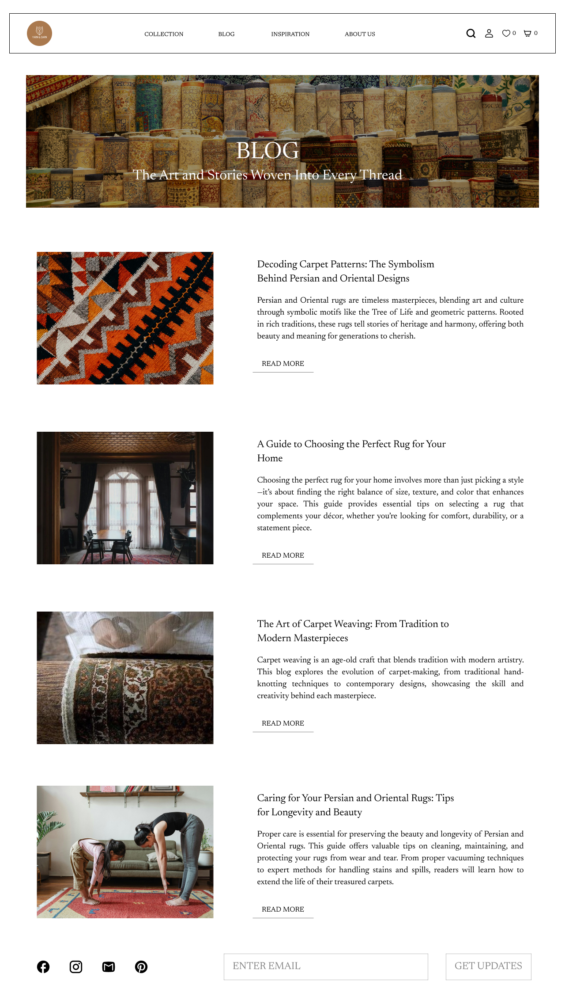
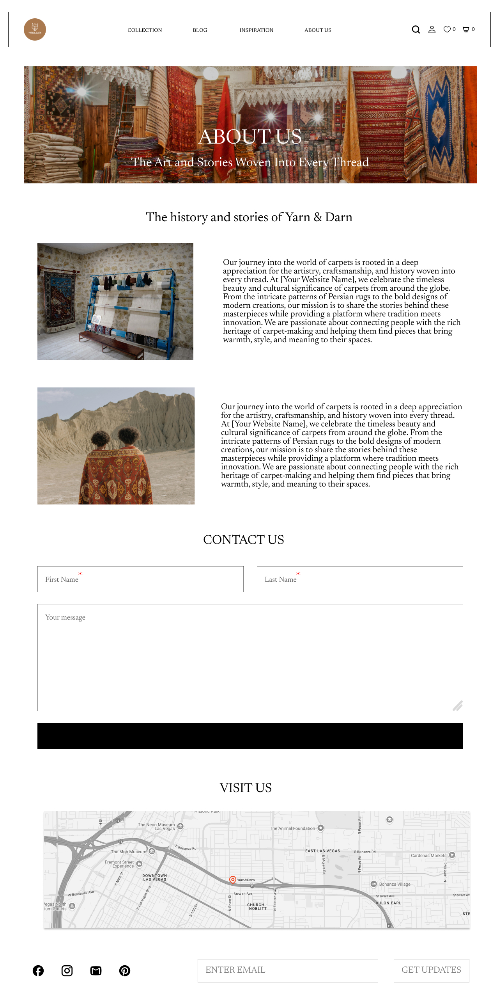

Enhancing search efficiency on a carpet shop!
UX/UI • GV Design Sprint • Case StudyYarn & Darn is an innovative platform designed to help homeowners, interior designers, and decorators find the perfect carpets with ease. Whether you're searching for a vintage Persian rug, a modern statement piece, or a cozy texture for your space, Yarn & Darn brings a curated selection right to your fingertips.
With countless styles, colors, and materials available, shoppers often struggle to find a carpet that fits their space, aesthetic, and budget. Traditional shopping methods make comparison difficult, leading to frustration and uncertainty.
Yarn & Darn simplifies carpet shopping by offering a curated selection, interactive filters, and visualization tools. Customers can explore, compare, and even preview how carpets will look in their space—making decisions easier and more enjoyable.
Our platform features a modern, sleek UI layout designed to enhance user experience, making carpet shopping effortless and enjoyable.
 



Wireframes are the blueprint of digital experiences, shaping structure, flow, and usability before design takes form
From concept to creation, Yarn & Darn redefines the journey of discovery—where texture meets technology, and tradition blends with modernity

Primary
Neutral
Herobold@48bold
Title@40bold
Body large@19bold
Default Button Style
Navigation Menu